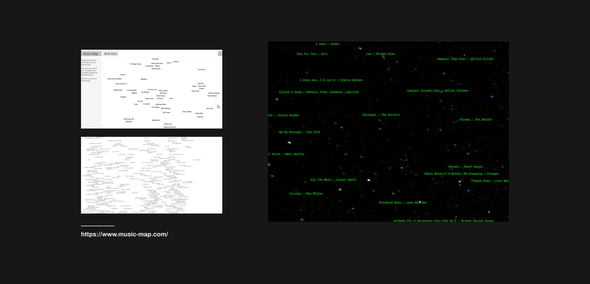
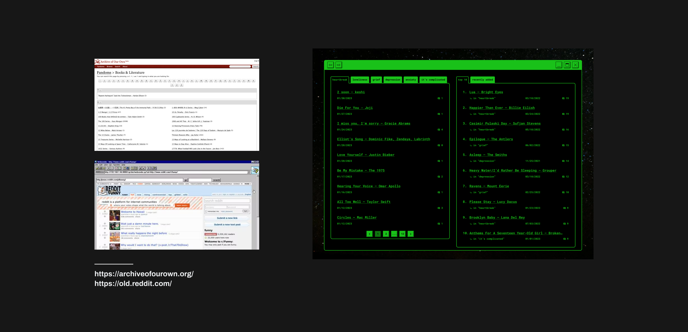
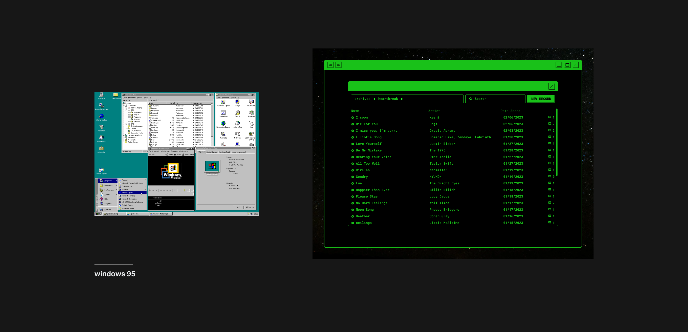

[background]
I’m not an inherently sad person, although I suppose this case study seems to tell a different story. I do, however, reflect on my own sadness – all the good and ugly parts: the wallowing, the shame, and the catharsis.
Often times it feels like society expects me to be not-sad, so I hesitate to openly express my moments of sadness because it feels like a deviation from the unspoken norm.
Which perhaps, is why I listen to sad music.
[why do we listen to sad music when we're sad?]
We listen to sad music to feel understood. It validates our emotions.
“A range of motivations have been found as to why people choose to listen to sad music, these include the role of music in: validating emotions, providing solace, providing emotional experiences, and aiding reflection and relaxation.” (AJM van den Tol, 2016)
i.e. Here is an artist singing about heartbreak and loneliness so the way I feel must be universally human.
[so, what songs do you listen to when you’re sad?]
... is a question with hundreds of hits on Reddit. Clearly, we’re curious about what others listen to when they’re sad. Conversely, we share what we listen to when we’re sad. Vulnerability may be scary, but internet anonymity makes it easier to express our negative emotions.
Feelings are complicated to force aloud, so the music we share becomes a medium with which we express ourselves.
What if we could create an internet space to share our sadness through the universal language of music?
This was the end result. Play the prototype.
If you can, turn your sound on. And perhaps put in some headphones. It's much more relaxing.
Concept exploration
What inspired the exploring and what was explored.



Why do the Archives look like that?
i.e. some decision decisions
01.
Dig deep. Explore the depths of our database.
The Archives are organized like a file management system. We hope it’s easy to navigate, so you can focus on the music. We welcome you to dig deeper, from computer into folder into file. Then, scroll down, down, down into our database of sad songs and even sadder thoughts. Take all the time you need.


02.
Share your thoughts with the stars and let go.
How are you, really? When you’re ready to share your thoughts, type the command into the console. There might be a lot to type, plus a few more commands, before your thoughts are permanently recorded into our database, but once they’re down, that’s it. Leave your doubts with us, close the window, and let go.


This was sort of a design project. But in some ways, I hope it was also an art project.
My art hat has a heart-shaped hole on one side and a Spongebob patch on the other. It is topped with a propeller that is too small to serve any aerodynamic purpose. I found my art hat one day at the bottom of my kitchen drawer along with a rainbow paper clip, a thermochromic pencil, and the crumbs of a red-velvet Oreo.
After six design internships, I was hardwired into thinking I could only design interfaces that were functional. Or looked like they were bred from the most sophisticated design system on planet earth.
In his book on emotional design, Don Norman wrote:
"A grandfather clock offers no more features or time-telling functions than a small, featureless mantelpiece clock, but the visceral (deep-rooted, unconscious, subjective, and automatic feelings) qualities distinguish the two in the eyes of the owner."
So I had three goals for this project. They were largely personal.
First, design a functional experience, but explore what it means to design an affective experience. Second, do not suppress my artsy-fartsy-monkey-brain. If it wants to spend hours perfecting the delay on an animation, or the corner radius of an illustration, let it. Third, enjoy myself.